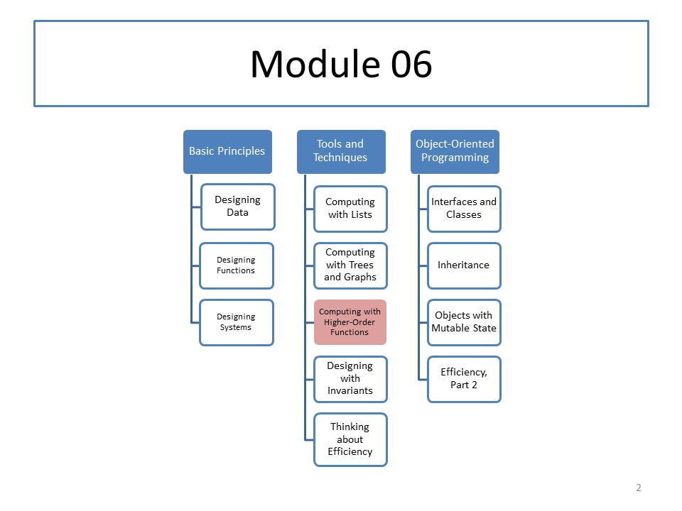

CS 5010: Module 06
Module Overview
Many function definitions differ only in small ways. This can lead to duplication of effort as you develop a program. We will identify techniques to minimize this duplication of effort. Eliminating duplication has many benefits: besides saving effort during coding, it creates single points of control, so each bug need be fixed only once; and it greatly eases maintenance and modification of your codebase.
Course Map
Readings
Read Part III from our textbook.
Resources
Lessons
- Lesson 6.1: Generalizing Similar Functions
- Guided Practice 6.1: Pizza!
- Lesson 6.2: Generalizing Over Functions
- Guided Practice 6.2: Converting Currencies
-
Lesson 6.3:
ormap,andmap, andfilter - Guided Practice 6.3: Authors-of-expensive-books
-
Lesson 6.4:
foldr - Guided Practice 5.4: inventory-total-copies-on-hand
-
Lesson 6.5: Rewriting Your Function Using
mapandfoldr - Guided Practice 6.5: Higher-Order Pizza!
- Lesson 6.6: From Templates to Folds
-
Guided Practice 6.6:
bintree-fold - Guided Practice 6.7: fancier tree-fold
Problem Set
Problem Set 06 is due on Monday, October 23, 2017.